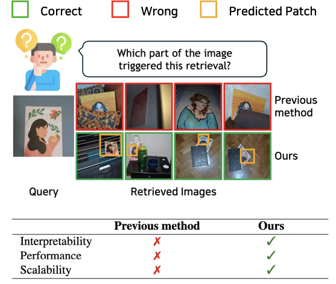
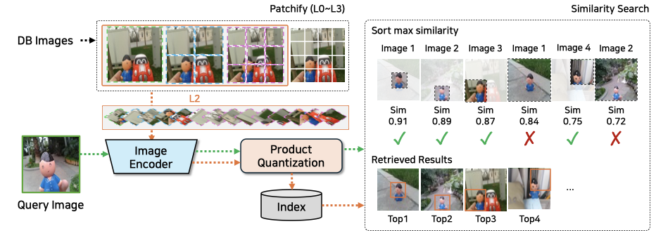
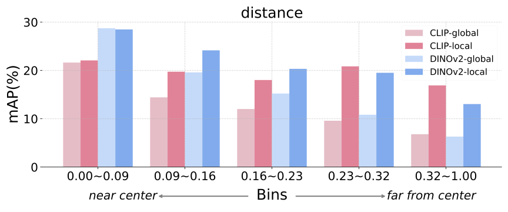
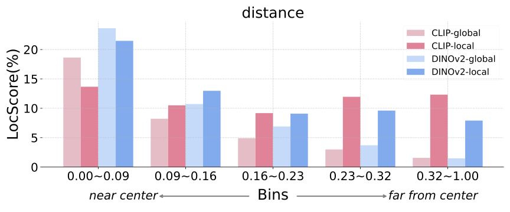
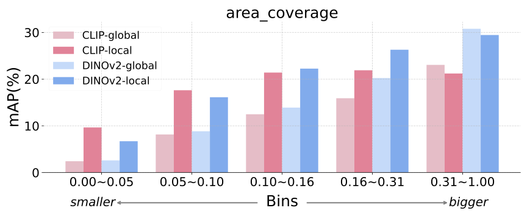
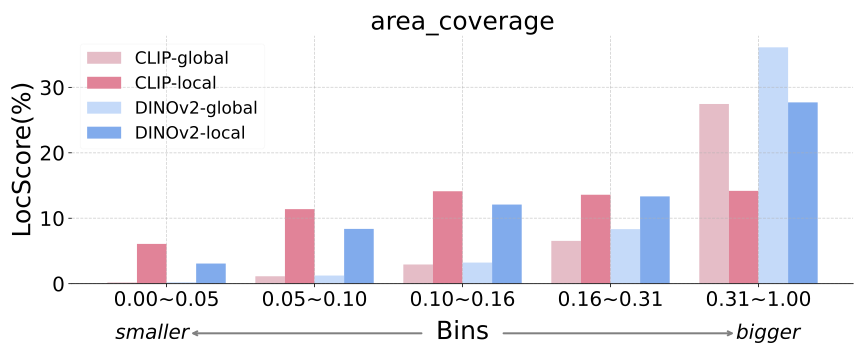
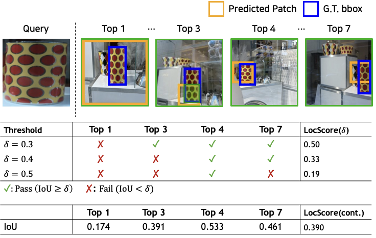
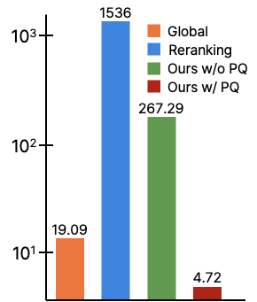

Patch-wise Retrieval: An Interpretable Instance-Level Image Matching
Patch-wise Retrieval (Patchify) improves instance-level matching by comparing local patch features between query and database images, enabling interpretable retrieval with explicit spatial grounding while remaining efficient through product quantization.
Motivation and Teaser

Patchify provides interpretable matching by localizing where retrieval evidence comes from, improves performance via local cues, and scales efficiently with product quantization.
- Interpretability: explicitly reveals where the match occurs.
- Performance: local representations provide stronger instance matching.
- Scalability: product quantization supports efficient large-scale retrieval.
Method: Patchify

- Each database image is split into structured multi-scale patches and encoded independently.
- Retrieval compares query representation with patch representations and ranks by maximum similarity.
- Patch-level indexing with product quantization keeps memory and retrieval latency practical.
Preliminary Experiments




LocScore: Localization-Aware Metric
Continuous LocScore: weighted overlap between predicted patch regions and ground-truth target regions over the ranked retrieval list.
Discrete LocScore(δ): ratio of true positives whose IoU is above a threshold δ, enabling controllable localization strictness.
LocScore complements mAP by evaluating whether retrieved results are not only correct, but also spatially grounded on the target object.
Experimental Results


Takeaways
- Interpretable instance retrieval with built-in spatial localization.
- Strong performance and scalability from a simple, training-free design.
BibTeX
@inproceedings{choi2026PatchwiseRetrieval,
title={Patch-wise Retrieval: A Bag of Practical Techniques for Instance-level Matching},
author={Wonseok Choi and Sohwi Lim and Nam Hyeon-Woo and Moon Ye-Bin and Dong-Ju Jeong and Jinyoung Hwang and Tae-Hyun Oh},
booktitle = {Proceedings of the Winter Conference on Applications of Computer Vision (WACV)},
year={2026}
}